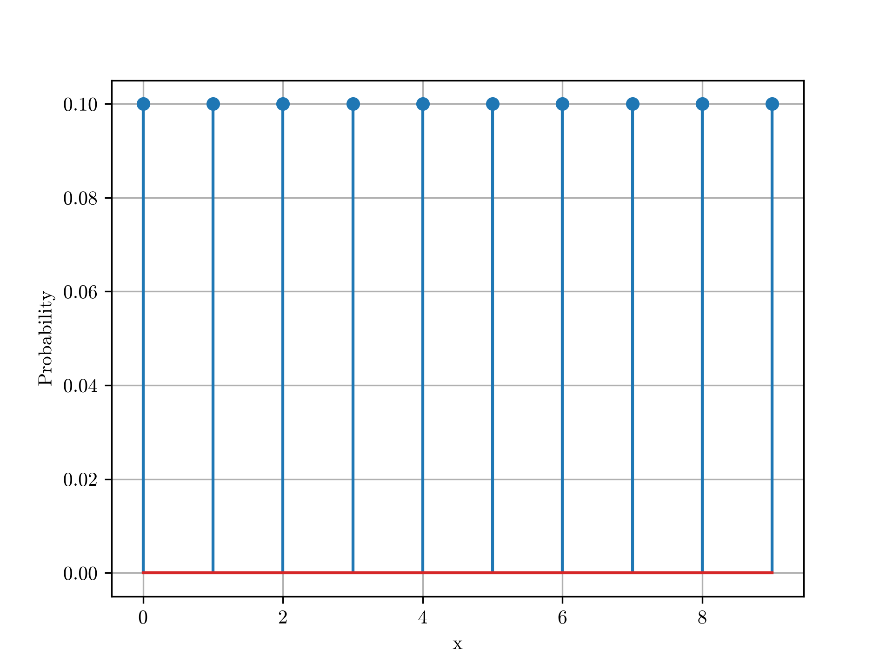
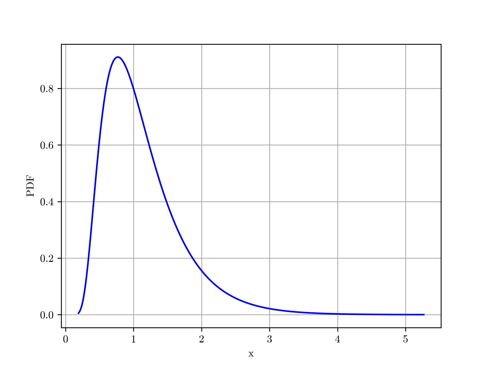
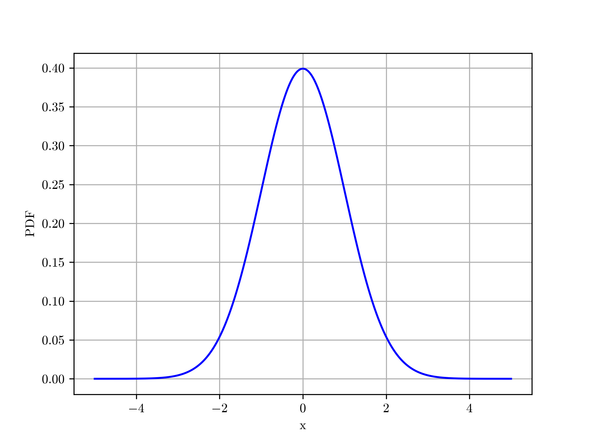
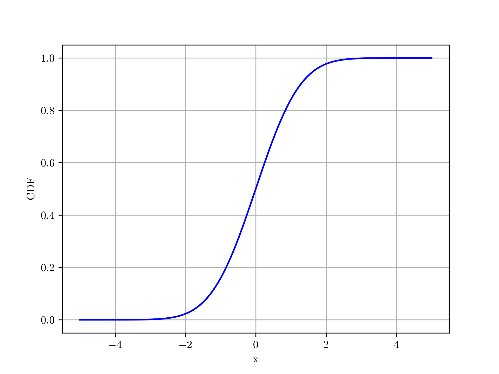

2D : Droplet#
The full runnable script can be found at examples/public/droplet.py on on GitHub.
Note
It's recommended to read all the examples in order, as previously explained portions won't be explained as thoroughly in later examples, and vice versa for the content introduced in this example.
Note
Some of the function calls, particularly for the visualizations, have been simplified from the calls used to generate the images. This is to highlight only the necessary parameters for these functions.
Includes#
- Purely Physics-Informed
- Time-Dependent Two-Dimensional Problem (
BoundedBox) - N-Dimensional Hypercubes (
Hypercube) - Operator Geometry (
OperatorGeometry) - Neural Operators (
NeuralOperator) - Distributions (
MarginalSpec) - Operator Domain (
OperatorDomain) - Sobol Sampling (
SobolSampler) - Hard Constraints (
HardConstraint)
Problem Description#
Wave propagation is a time-dependent phenomenon encountered across a wide range of engineering applications, including structural dynamics, acoustics, and vibration analysis. For sufficiently simple domains and boundary conditions, analytical solutions can be obtained; however, the computational cost of repeatedly solving the governing equations becomes increasingly relevant when considering a family of problems with varying physical and initial-condition parameters.
Here, instead of solving a single wave-propagation problem, we approximate a parametric family of solutions using a physics-informed neural operator. The solution is parameterized by the wave speed (c), the center ((x_0,y_0)) and width (\sigma) of the initial disturbance, and its amplitude (A).
Starting with the standard homogeneous wave equation and homogenous Dirichlet boundary conditions.
And initial conditions as follows,
Granted, this particular question has analytical solution, but this allows us to still validate our results while retaining sufficient complexity. Naturally, your use cases wont have analytical solutions.
where
and the Fourier coefficients are
with
Domain#
Let's start by defining our domain.
time = pinnjax.Time(min=0, max=1, step=0.05)
query = pinnjax.SpatialDomain(min=(0, 0), max=(1, 1), times=time)
Pretty straight forward if you'd read the other examples, however here we also have non-spatial-temporal inputs (\(c\), \(x_0\), \(y_0\), \(\sigma\), \(A\)). So, we would like to contain them as well.
For this we will use a Hypercube. They can be created from a Domain with .from_domain() or from distributions (MarginalSpec), either ContinuousDistribution, DiscreteDistribution, or an IntervalDistribution using .from_distributions(). .from_intervals() is a special form of .from_distributions(), which uses an IntervalDistribution and normal distribution.
The ContinuousDistribution are simply wrappers around scipy.stats.rv_continuous.
descriptor = pinnjax.Hypercube.from_intervals(
(0.5, 1.0), # c
(0.30, 0.70), # x0
(0.30, 0.70), # y0
(0.10, 0.12), # sigma
(0.5, 1.0), # A
axis_names=("c", "x0", "y0", "sigma", "A"),
)
These distributions will come into play later when we need to sample from our descriptor.
While not used in this example, this is a convenient time to shows the distribution options available in \(\texttt{PINN-JAX}\).
discrete = pinnjax.DiscreteDistribution(tuple(range(0, 10, 1)))
discrete.plot()
Figure

continuous = pinnjax.ContinuousDistribution(type="fatiguelife",
kwargs={"c": 0.5}
)
continuous.plot()
Figure

Because the ContinuousDistribution are wrappers around scipy.stats.rv_continuous, they also have access to the same methods, such as:
>>> continuous.pdf(1.0)
0.7978845608028654
>>> continuous.mean()
1.125
>>> continuous.std()
0.57282196186948
The full list can be found at ContinuousDistribution. If a method available in scipy.stats.rv_continuous hasn't been wrapped, you can access the internal scipy.distribution using dist = continuous.dist, and then run the methods directly on that object.
interval = pinnjax.IntervalDistribution(
pinnjax.ContinuousDistribution(type="norm"), interval=(-5, 5)
)
interval.plot()
Figure

Rather than the "pdf" (probability distribution function), all distributions can also plot their "cdf" (cumulative distribution function).
interval.plot(kind="cdf")
Figure

From here we can construct our OperatorDomain, to be used with our NeuralOperator.
operator = pinnjax.OperatorDomain(
query=query,
descriptor=descriptor.domain,
)
In addition to our Hypercube containing our non-spatial-temporal components, we still need to describe our spatial-temporal components, and given this is 2D problem, we will use BoundedRectangle.
BoundedRectangle works similarly to the other bounded ComplexShapes you've seen previously. It is defined as :
With the internal order,
shapes= [
interior,
bottom_line,
right_line,
top_line,
left_line
]
spatial_geometry = pinnjax.BoundedRectangle(
origin=(0, 0),
edge1=(1, 0),
edge2=(0, 1),
times=time,
initial=True,
)
Then, we can combine the two in an OperatorGeometry.
geometry = pinnjax.OperatorGeometry(
spatial_geometry=spatial_geometry,
descriptor_shape=descriptor,
operator_domain=operator,
)
# ----- SAMPLING -----
sampler = pinnjax.SobolSampler(
mode="point_count",
)
descriptor_count = 1
sampling_values = [
64_000 // descriptor_count, # PDE
50,
50,
50,
50,
500, # IC
]
geometry.sample(
sampler,
sampling_values=sampling_values,
descriptor_count=descriptor_count,
)
geometry.print_samples()
# ----- MODEL -----
hard_constraints = (
pinnjax.HardDirichletConstraint(
query,
condition=0.0,
side=(-1, 0),
),
pinnjax.HardDirichletConstraint(
query,
condition=0.0,
side=(1, 0),
),
pinnjax.HardDirichletConstraint(
query,
condition=0.0,
side=(0, -1),
),
pinnjax.HardDirichletConstraint(
query,
condition=0.0,
side=(0, 1),
),
)
# def initial_displacement_fn(point: Array) -> Array:
# x, y, _t, _c, x0, y0, sigma, A = point
# gaussian = A * jnp.exp(-((x - x0) ** 2 + (y - y0) ** 2) / sigma**2)
# return gaussian * jnp.sin(jnp.pi * x) * jnp.sin(jnp.pi * y)
def initial_displacement_fn(point: Array) -> Array:
x, y, _t, _c, x0, y0, sigma, A = point
return A * jnp.exp(-((x - x0) ** 2 + (y - y0) ** 2) / sigma**2)
hard_ic = pinnjax.HardArrayInitialDerivativeConstraint(
times=time,
initial_condition=initial_displacement_fn,
initial_derivative=0.0,
evolution_axis=2,
)
input_domain = operator.combined_domain()
optimization = pinnjax.Optimization(
input_transformation=pinnjax.NormalizationBetweenNeg1and1(
input_domain,
),
hard_constraint=(hard_ic, *hard_constraints),
)
initialization = pinnjax.Initialization(
weights=jinit.variance_scaling(
scale=1.48**2,
mode="fan_in",
distribution="truncated_normal",
),
bias=jinit.zeros,
)
activation = pinnjax.Activation(
jax.nn.gelu,
kwargs={"approximate": False},
)
topology = (8, 32, 32, 32, 1)
model = pinnjax.NeuralOperator.parametric_from_fnn(
operator,
topology,
activation,
initialization=initialization,
optimization=optimization,
)
def analytical_wave_solution(
grid: pinnjax.RectangularGrid2D,
descriptor: Array,
*,
modes: int = 50,
quadrature_points: int = 2048,
) -> Array:
"""Evaluate the analytical Fourier-series solution on a PINN-JAX grid."""
c, x0, y0, sigma, A = descriptor
xmin, ymin = grid.domain.min
xmax, ymax = grid.domain.max
Lx = xmax - xmin
Ly = ymax - ymin
m = jnp.arange(1, modes + 1)
n = jnp.arange(1, modes + 1)
# Compute the Fourier coefficients of the initial Gaussian.
x_quad = jnp.linspace(xmin, xmax, quadrature_points)
y_quad = jnp.linspace(ymin, ymax, quadrature_points)
gaussian_x = jnp.exp(-((x_quad - x0) ** 2) / sigma**2)
gaussian_y = jnp.exp(-((y_quad - y0) ** 2) / sigma**2)
# gaussian_x = jnp.exp(-((x_quad - x0) ** 2) / sigma ** 2) * jnp.sin(jnp.pi * x_quad)
# gaussian_y = jnp.exp(-((y_quad - y0) ** 2) / sigma ** 2) * jnp.sin(jnp.pi * y_quad)
x_basis_quad = jnp.sin(
jnp.pi * (x_quad[:, None] - xmin) * m[None, :] / Lx,
)
y_basis_quad = jnp.sin(
jnp.pi * (y_quad[:, None] - ymin) * n[None, :] / Ly,
)
I_m = jnp.trapezoid(
gaussian_x[:, None] * x_basis_quad,
x_quad,
axis=0,
)
I_n = jnp.trapezoid(
gaussian_y[:, None] * y_basis_quad,
y_quad,
axis=0,
)
coefficients = 4.0 * A / (Lx * Ly) * I_m[:, None] * I_n[None, :]
# Natural frequency of each (m, n) mode.
omega = c * jnp.pi * jnp.sqrt((m[:, None] / Lx) ** 2 + (n[None, :] / Ly) ** 2)
# Evaluate the spatial basis at the same points used for prediction.
coordinates = grid.coordinates
x = coordinates[..., 0]
y = coordinates[..., 1]
x_basis = jnp.sin(
jnp.pi * (x[..., None] - xmin) * m / Lx,
)
y_basis = jnp.sin(
jnp.pi * (y[..., None] - ymin) * n / Ly,
)
# Zero initial velocity gives only cosine time terms.
time_basis = jnp.cos(
grid.times[:, None, None] * omega[None, :, :],
)
return jnp.einsum(
"ijm,ijn,tmn,mn->tij",
x_basis,
y_basis,
time_basis,
coefficients,
)
example_descriptor = jnp.asarray(
[
0.75, # c
0.5, # x0
0.5, # y0
0.11, # sigma
0.75, # A
]
)
# example_descriptor = descriptor.samples[0]
grid = pinnjax.RectangularGrid2D(
query,
num_points=(100, 100),
time_range=(0, 1),
num_times=50,
)
analytical_solution = analytical_wave_solution(
grid,
example_descriptor,
)
# -------------------------------------
coordinates = jnp.broadcast_to(
grid.coordinates[None, ...],
(len(grid.times), *grid.coordinates.shape),
)
times = jnp.broadcast_to(
grid.times[:, None, None, None],
(*coordinates.shape[:-1], 1),
)
query_inputs = jnp.concatenate(
[coordinates, times],
axis=-1,
).reshape(-1, 3)
descriptor_inputs = jnp.broadcast_to(
example_descriptor,
(query_inputs.shape[0], example_descriptor.shape[0]),
)
evaluation_inputs = jnp.concatenate(
[query_inputs, descriptor_inputs],
axis=-1,
)
evaluation_truth = analytical_solution.reshape(-1)
evaluation = pinnjax.TabularPointwiseEvaluation(
inputs=evaluation_inputs,
truth=evaluation_truth,
regularity=200,
metric_key="MSE",
)
# -------------------------------------
# ----- PLOTTING -----
if SHOW or SAVE:
pinnjax.plot_prediction_evolution(
analytical_solution,
grid,
cmap="coolwarm",
show=SHOW,
save=SAVE,
save_name="analytical",
save_location=save_folder,
)
# ----- RESIDUALS -----
class WaveEquation(pinnjax.PartialDifferentialEquation):
def _residual(
self,
u: Array,
ops: pinnjax.DifferentialOperators,
) -> Array:
descriptor, _query = ops.model.split_inputs(u)
c = descriptor[0]
g = jax.grad(ops.T)
def second(axis: int) -> Array:
tangent = jnp.zeros_like(u).at[axis].set(1.0)
_, deriv = jax.jvp(g, (u,), (tangent,))
return deriv[axis]
u_tt = second(cast(int, ops.evolution_axis))
laplacian = second(0) + second(1)
return u_tt - c**2 * laplacian
def _residuals(
self,
points: Array,
ops: pinnjax.DifferentialOperators,
) -> Array:
vm = jax.vmap(lambda p: self._residual(p, ops), in_axes=0)
return jnp.nan_to_num(
vm(points),
nan=1e-6,
posinf=1e6,
neginf=-1e6,
)
@eqx.filter_jit
def __call__(
self,
points: Array,
ops: pinnjax.DifferentialOperators,
) -> Array:
return self._residuals(points, ops)
pde = WaveEquation()
boundary_condition = pinnjax.DirichletBoundaryCondition(condition=0.0)
initial_displacement = pinnjax.InitialCondition(initial_displacement_fn)
initial_velocity = pinnjax.InitialDerivativeCondition(condition=0.0)
residuals = [
pde,
boundary_condition,
boundary_condition,
boundary_condition,
boundary_condition,
[initial_displacement, initial_velocity], # three residuals -- one shape
]
geometry.assign_residuals(residuals)
geometry.assign_loss(pinnjax.ResidualMSError())
# ----- TRAINING -----
scheduler = optax.exponential_decay(
init_value=1e-3,
transition_steps=500,
decay_rate=0.8,
end_value=1e-5,
)
optimizer = pinnjax.Optimizer(
optax.adam,
kwargs={"learning_rate": scheduler},
)
training = pinnjax.Training(
optimizer,
epochs=25_000,
train_mode="type",
early_stopping=True,
patience=500,
rel_tolerance=1e-6,
selection_criterion="loss",
)
updated_model = pinnjax.train(
model,
geometry,
training,
evaluation=evaluation,
verbosity=100,
)
final_loss_dictionary = geometry.final_loss()
final_eval = evaluation.evaluate(updated_model)
final_results = pinnjax.EvaluationResults.from_dict(final_eval)
if SAVE:
pinnjax.save_model(updated_model, path=save_folder)
pinnjax.save_configuration(
save_folder,
overwrite=False,
evaluation=final_results,
geometry=geometry,
model=updated_model,
optimization=optimization,
training=training,
)
# ----- PREDICTION -----
if SHOW or SAVE:
geometry.plot_loss(show=SHOW, save=SAVE, save_location=save_folder)
geometry.plot_evaluation(show=SHOW, save=SAVE, save_location=save_folder)
grid = pinnjax.RectangularGrid2D(
query,
num_points=(100, 100),
time_range=(0, 1),
num_times=100,
)
prediction = pinnjax.predict_evolution(updated_model, grid, descriptor=example_descriptor)
# ----- PLOTTING -----
pinnjax.plot_prediction_evolution(
prediction,
grid,
cmap="coolwarm",
show=SHOW,
save=SAVE,
save_location=save_folder,
save_name="prediction",
)